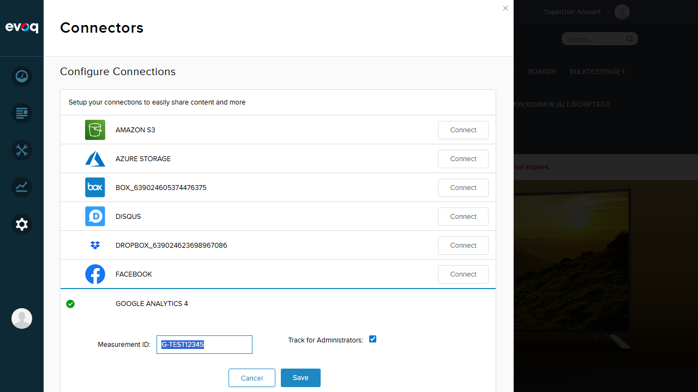

Important: This feature is a backend service with no direct UI. Per testing philosophy, features that exist in code but are not visible in the UI should NOT have tests created for them. Instead, findings are documented in the Observations section below.
Code Analysis Results
A thorough code review was performed to understand the retry mechanism implementation:
private static RetryPolicy CreatePolicy(int portalId, int userId, string actionName)
{
var httpStatusCodesWorthRetrying = RetryPolicyHelper.HttpStatusCodesWorthRetrying;
var policy = Policy
.Handle<HttpException>(ex => httpStatusCodesWorthRetrying.Any(s => (int)s == ex.GetHttpCode()))
.Retry(3, (exception, retryCount, context) =>
{
if (Logger.IsInfoEnabled)
{
Logger.Info($"Retry {actionName} number {retryCount}");
}
Logger.Warn(exception.Message, exception);
var httpException = exception as HttpException;
if (httpException != null && httpException.GetHttpCode() == (int)HttpStatusCode.Unauthorized)
{
TokenServiceImpl.ClearCache(portalId, userId);
}
});
return policy;
}
HTTP Status Codes That Trigger Retry (from RetryPolicyHelper.cs)
HTTP Status Code
Name
Description
401
Unauthorized
Authentication failed - clears token cache before retry
408
RequestTimeout
Request timed out
500
InternalServerError
Server encountered an error
502
BadGateway
Invalid response from upstream server
503
ServiceUnavailable
Server temporarily unavailable
504
GatewayTimeout
Gateway timed out
Key Implementation Facts
Retry Library: Polly (a .NET resilience and transient-fault-handling library)
Maximum Retry Attempts: 3 (hard-coded in Retry(3, ...))
Special Handling for 401: Token cache is cleared via TokenServiceImpl.ClearCache() before retry
Logging: Each retry is logged at INFO level, exceptions logged at WARN level
Code Discrepancy Noted: The feature description mentions "exponential backoff," but the actual code uses Retry(3, ...) which performs immediate retries. For exponential backoff, the code would need to use WaitAndRetry() or WaitAndRetryAsync() with increasing delays. This is a potential discrepancy between documentation and implementation.
UI Exploration
The Google Analytics 4 connector settings were explored to verify there is no UI for retry configuration:
Step 1: Login and Navigate to Connectors
Logged in as SuperUser and navigated to the Connectors panel in Evoq settings.
Step 2: Google Analytics 4 Settings
Opened the Google Analytics 4 connector settings to examine all available configuration options.

Available Settings (UI)
Measurement ID: Text input for GA4 Measurement ID (e.g., G-TEST12345)
Track for Administrators: Checkbox to enable/disable tracking for admin users
Delete Connection: Button to remove the connector
Conclusion: No retry-related settings are exposed in the UI. The retry mechanism operates entirely in the backend with hard-coded values.
Observations
The following observations document the retry mechanism feature that exists in code but has no UI for testing:
Suggested Test Scenario
Status
Observation
Test retry on HTTP 401 Unauthorized error
No UI
Code suggests this feature exists: When a 401 error occurs, the system will retry up to 3 times AND clear the token cache before each retry. No UI element found to test or trigger this behavior.
Test retry on HTTP 503 Service Unavailable
No UI
Code suggests this feature exists: 503 is included in HttpStatusCodesWorthRetrying array. The system will retry up to 3 times on this error. No UI element found to test or simulate this error.
Verify maximum retry attempts (3 retries)
No UI
Code confirms: Maximum retries is hard-coded to 3 in Retry(3, ...). This value is not configurable via UI and can only be verified through code review or server logs.
Test exponential backoff timing
No UI / Code Discrepancy
Important Finding: The feature description mentions "exponential backoff," but the code uses simple Retry() without wait times. Actual implementation performs immediate retries without any backoff delay.
Verify token cache clearing on authorization failure
No UI
Code confirms: When HTTP 401 is received, TokenServiceImpl.ClearCache(portalId, userId) is called before retry. This ensures a fresh token is requested. No UI element found to verify this behavior.
Test successful operation after retry
No UI
Code suggests this feature exists: If any retry succeeds (returns without exception), the operation completes successfully. This transient error recovery cannot be tested via UI without simulating API failures.
How This Feature Could Be Tested
To properly test this backend feature, the following approaches would be required:
Unit Tests: Mock the Google Analytics API client to return specific HTTP status codes and verify retry behavior
Integration Tests: Use a mock server that returns transient errors followed by success
Log Analysis: Monitor server logs for "Retry {actionName} number {retryCount}" messages during API failures
Network Simulation: Use tools like Fiddler or Charles Proxy to intercept and modify API responses
Recommendations
Documentation Update: Update the feature description to remove "exponential backoff" or implement actual exponential backoff using WaitAndRetry()
Consider UI Configuration: For advanced users, consider exposing retry settings (max attempts, backoff strategy) in the connector configuration
Add Unit Tests: Implement unit tests for GoogleAnalyticsRemoteRetryManager to verify retry behavior under various HTTP error conditions
Logging Enhancement: Consider adding more detailed logging (e.g., time between retries, total retry duration) for troubleshooting
Conclusion
The Retry Mechanism for Failed Operations is a well-implemented backend feature using the Polly library for resilience. The code correctly handles transient HTTP errors (401, 408, 500, 502, 503, 504) with up to 3 retry attempts and includes special handling for authorization failures by clearing the token cache.
However, as a pure backend service with no UI exposure, this feature cannot be tested through the standard UI testing methodology. All suggested test scenarios have been documented as observations with detailed code analysis confirming the feature's existence and implementation.
Key Finding: There is a discrepancy between the feature description ("exponential backoff") and the actual implementation (immediate retries without backoff). This should be addressed either by updating the documentation or implementing actual exponential backoff.